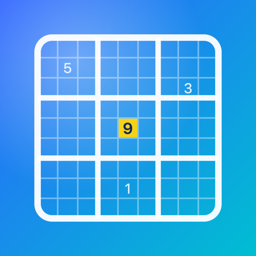

数独学堂
版本 1.0（1） · 2.0 MB · 构建于 2026-10-04 13:36
- 用 iPhone 的 Safari 打开这个页面（可以用相机扫下面的二维码），点上面的「安装到这台 iPhone」，在弹窗里点「安装」。
- 这是开发签名的测试包，只能装在开发者账号里登记过的设备上；没登记的设备会提示无法安装。
- 首次打开前，需要在「设置 → 隐私与安全性 → 开发者模式」里打开开发者模式（会重启手机）。
- 如果打开时提示「不受信任的开发者」，到「设置 → 通用 → VPN 与设备管理」里信任对应的开发者。
- 需要 iOS 26 或更高版本。
在电脑上看到这个页面时，用 iPhone 相机扫码